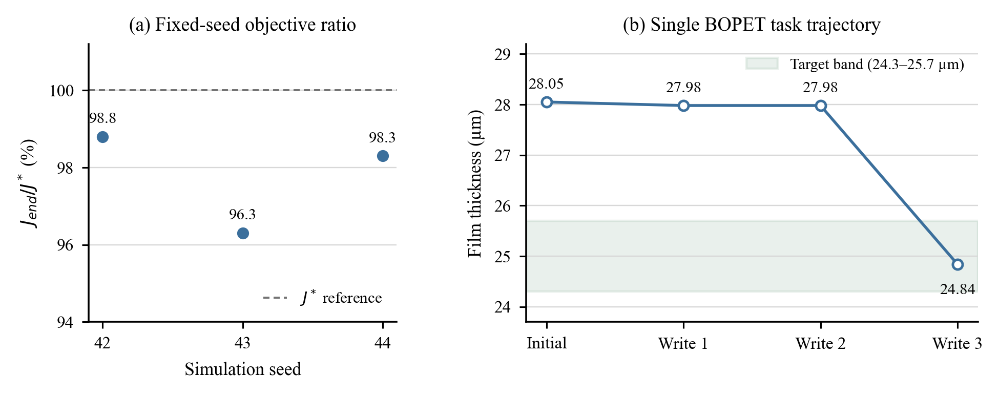
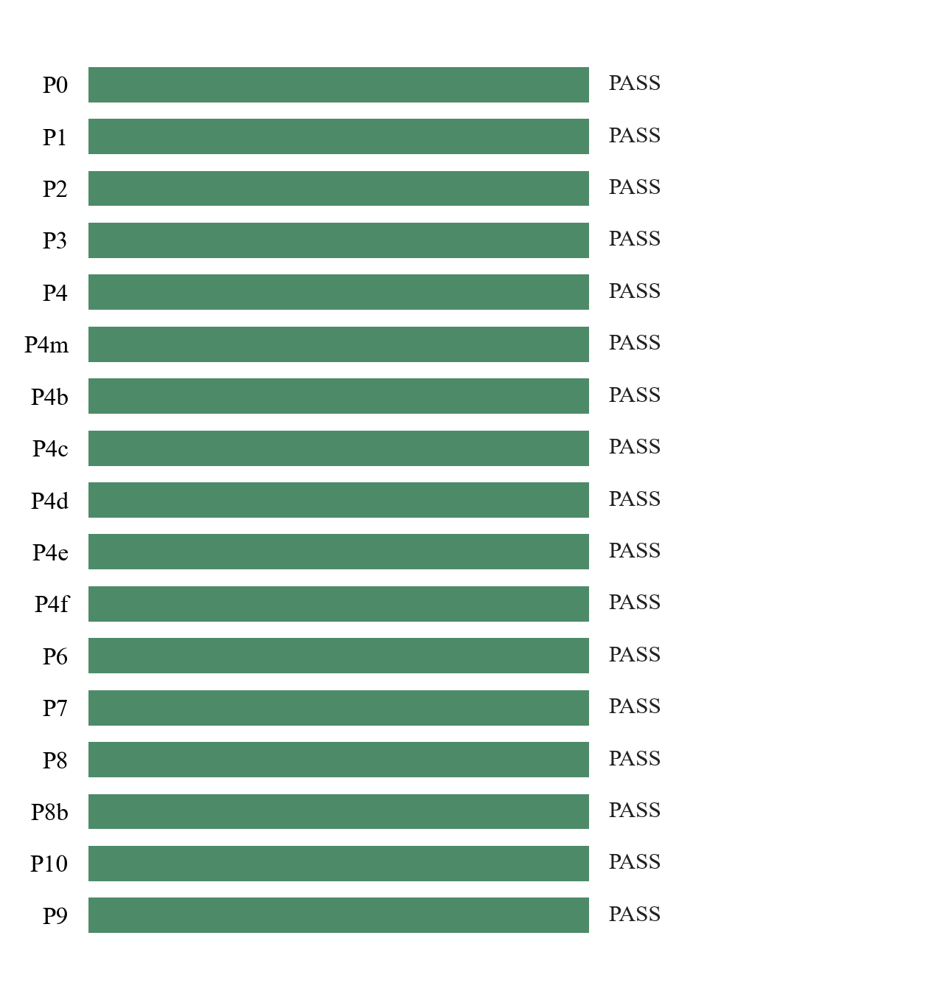
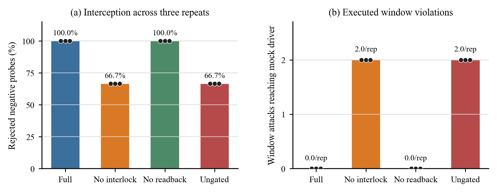

结论先览
最新集成批次 20261031034253-1dbo 在本地确定性模拟环境中达到 76 项通过、1 项警告、0 项失败（报告评分 99.6/100）。它支持多协议接入和受治理软件路径的工程可行性论述，但运行元数据显示 没有启用 LLM Agent harness；不能据此主张 Agent 自主控制、模型可替换或真实产线效果。
按流程核对：最新集成实验
运行：20261031034253-1dbo；配置：seed 42，cast-film 模拟场景；工具驱动：deterministic OpenCode adapter；模型 Agent：none。平台与模拟器在运行前已存在，且 AW_HOME 为共享目录，因此该运行不是冷启动隔离部署。
平台/模拟器可达；状态为 already-up/reused。
不代表本批冷启动复现
5 个模拟设备覆盖 Modbus TCP/RTU、OPC UA、MQTT、HTTP；5 个节点可采样。
4 条主线 + 1 条卫星采集
四种可写协议负向探针 24/24 被拒绝；写操作 p50 为 31.649 ms。
本地模拟协议事务
3 个固定 seed 的仿真目标比值为 96.3–98.8%；BOPET 任务 3 次写入后报告值 24.84 µm。
BOPET 账本存在未闭合记录
优化轨迹与过程结果

左：seed 42/43/44 的 Jend/J*；seed 43 起点已满足 benchmark 判据，0 次迭代、0 次写入。右：一次 BOPET 任务轨迹；仅最终读数进入目标带，单次任务不支持因果或重复性结论。
阶段状态

17 个阶段状态：16 项 PASS、1 项 WARN、0 项 FAIL；P10 的单项警告为语义卡描述检查。分数按 PIPELINE 权重计，不等于统计置信度或产品成熟度。
闭环仿真分种子结果
| Seed | J0 | Jend | J* | Jend/J* | 迭代 | 治理写入 | 判定 |
|---|---|---|---|---|---|---|---|
| 42 | 66.27 | 88.78 | 89.89 | 98.8% | 2 | 2 | 满足脚本判据 |
| 43 | 86.54 | 86.54 | 89.89 | 96.3% | 0 | 0 | 满足脚本判据 |
| 44 | 63.98 | 88.38 | 89.89 | 98.3% | 2 | 2 | 满足脚本判据 |
报告的 mean J/J* 为 97.8%（seed 42=98.8%，43=96.3%，44=98.3%）。此处 seed 是同一仿真 benchmark 的固定起始状态；不是三个独立部署，也没有基线控制器的配对比较。seed 43 的数值来自零动作起点。
阶段明细
| 阶段 | 状态 | 检查/说明 |
|---|---|---|
| P0 — Bootstrap simulator & platform | PASS | already up (reused) |
| P1 — plant model preset + offline optimum W* | PASS | — |
| P2 — multi-protocol multi-line provisioning（≤5 ） | PASS | 5/5 devices ready · 4 lines |
| P3 — multi-protocol DAQ + governed write/read + F5 interception | PASS | 5/5 Linesampling |
| P4 — 数采→数控→判定 工具级闭环（harness=opencode，不经 LLM） | PASS | 4 loops |
| P4m — AgentTeam 优化任务：目标下达 → 时段读数 → 治理写 → 达标收口 | PASS | writes=1 PV=204.6999969482422/204.704 |
| P4b — Rollback & optimization records (node rollback · verdict/execution separation · param ledger) | PASS | rollback & ledger passed |
| P4c — HITL 审批闭环（挂起→面板可见→批准→真实写生效） | PASS | HITL loop passed |
| P4d — 治理只读面（参数账本·审计·运维日志·报警） | PASS | 11 锚 / 200 审计 |
| P4e — 配方管理全生命周期（版本·已知良好·回退·基准恢复·一键下发） | PASS | 2/2 Line配方全链通过 |
| P4f — 工艺参数映射层：参数面读写 · 标准转换模式 · 分层限界联锁 · Agent param_control | PASS | 4/4 param-layer checks |
| P6 — 闭环优化参数 benchmark（3 seed · 写路径=governed · ≤8 迭代/seed） | PASS | J/J* ∈ [0.963, 0.988] |
| P7 — 多形态数采：向量轮廓与图像帧落库 | PASS | vector 2 / image 2 |
| P8 — Cross-scenario portability (re-commission on a second plant preset, config-only) | PASS | film-line: 3 lines + 2 satellite · F5 9/9 · false blocks 0 · 0 code changes |
| P8b — System backstop drill (PV frozen out of window → system-judged bounded rollback) | PASS | fired in 120.189s · restored true |
| P10 — 双拉产线:节点探测补建 → 五协议多节点建线 → AgentTeam 多节点闭环 | PASS | nodes 9/9 · knobs 3 · 24.84μm ✔ |
| P9 — Platform subsystems (team dispatch · team memory idempotency · harness registry) | PASS | team COMPLETED · mem ✔ · engines 14(14 avail) |
同批重跑与失败批次：不能合并分母
当天三个 integrated 报告均显示硬门通过，但同为 seed 42、复用共享 AW_HOME，checker 源哈希分别不同；因此不是冻结代码下的三次独立重复实验。最新批次用于正文的受限主结果，较早重跑用于审计复现性，不做跨运行平均。
| 运行 | 阶段检查 | J/J* 均值 | checker hash | 解释 |
|---|---|---|---|---|
| 20261031030602-1sng | 73 pass / 4 warn / 0 fail | 97.5% | f1b50e757e309bc6 | 同 seed/共享运行环境；不并成 n=3 |
| 20261031032514-1eyw | 75 pass / 2 warn / 0 fail | 97.7% | 1ce2f2bcc2ded098 | 同 seed/共享运行环境；不并成 n=3 |
| 20261031034253-1dbo | 76 pass / 1 warn / 0 fail | 97.8% | 82daeac2691efc94 | 同 seed/共享运行环境；不并成 n=3 |
20261031025846-czk 在私有模拟器启动隔离检查处超时，0 条产线、0 样本；未进入有效实验阶段，不纳入结果分母，但保留在此审计记录中。20261031033645-22n0 判 FAIL。注塑、污水、退火三个脚本任务达到各自目标；BOPET 0 次写入、0 轮迭代、27.40 µm 未达 25±0.7 µm。不能据此写成四场景全成功。治理消融：哪些结果存在，哪些没有
下图和表基于最近保存的 E1a 四臂 API 级模拟器消融，seed 42、每臂 3 次、每次 6 个负向探针。实验因素是 interlock/readback/authorization 组合，不是预注册的审批门 ON/OFF 单因素实验。

| E1a 臂 | 负向探针拦截 | 越窗请求到达 mock driver | 合法尝试误拦 |
|---|---|---|---|
| full | 18/18 (100.0%) | 0 | 0/69 |
| no-interlock | 12/18 (66.7%) | 6 total (2/repeat) | 0/69 |
| no-readback | 18/18 (100.0%) | 0 | 0/69 |
| ungated | 12/18 (66.7%) | 6 total (2/repeat) | 0/69 |
Full 与 no-readback 两臂均拦截 18/18 负向探针；no-interlock 与 ungated 各拦截 12/18，且每次重复均有 2 个窗口类请求到达 mock driver。每臂合法测试请求误拦为 0（报告的边界合法检查 9/9）。这说明所测低层 mock/API fixture 中，窗口联锁参与拦截窗口越限请求；它不等于审批门效果，也不证明真实驱动或人机审批性能。
独立的审批上下文复核组件消融
另一组 12 个 mock-driver 挑战覆盖 3 条 recipe 路由 × 4 个身份字段。上下文比较启用时 12/12 在写入前拒绝；仅在测试变体移除 tuple 比较后，6 个 product/run 变化各产生 2 次 mock write 和 1 条 execution record，line/recipe 变化仍被其他检查拒绝。该结果只归因于身份上下文比较这一组件。
配置驱动虚拟线：从文档到采集、导出和分离写读回
这是单独的文档驱动虚拟线验收，不与 integrated seed runs 或 Agent 优化任务合并。依据虚拟接口说明建立 HTTP/MQTT 设备映射；配置供给 11/11 项通过，新线 5/5 个 DAQ 节点在线；64 点向量帧按向量接口读取；lead 只读任务完成并检查 5 条 acquisition streams；导出校验 19/19 通过（4 个标量文件 818 行，向量 54×64=3,456 点）。
写入与读任务分离：管理员另行将 SP 从 25 写到 27，再恢复到 25；独立 DAQ 两次读到 27 和 25。该写入没有 Agent task、actor、approval 或 driver-event 关联，不能称为 Agent 参数下发闭环。HTTP 返回的 readback-verified 是响应回显，设备证据来自独立 DAQ。
真实 harness、回归套件与实验覆盖缺口
真实 AgentTeam episode
最近合格的完整 P12 证据包来自 OMP + 本机 Qwen 配置：资格检查通过，但 workflow 和 evidence-integrity 均 FAIL，任务 CANCELED，0 个已验证审批、0 个通过的受治理写入。此记录说明实际 harness 闭环未得到有效结果，不纳入论文正向实验结果。
软件回归（支持性证据）
- unit：915 项，913 pass、0 fail、2 skipped；
- MCP 14/14，plugin lifecycle 22/22，twin-provider 5/5，skills 147/147；
- line-governance 44/44；11 plugins 无 failures，126/126 工具可用。
API-live 因 fresh-instance 注册前置不满足而未获合格运行，不能计入产品通过数。
论文可用性判定
- 可写：本地模拟多协议配置与采集；负向写探针拦截；固定种子的确定性仿真过程结果；有限的写后独立读回。
- 需限定：单次/固定 seed、共享平台状态、不同批次、mock driver、模型调用未启用或未留存。
- 不能写：审批 ON/OFF 因果结论、Harness 或模型优劣/可替换性、多 Agent 自主优化能力、显著性、物理产线效果或上线结论。
当前证据可以支撑一篇系统工程可行性论文中的受限实验论据；仍不足以作为完整的 TII 对照/消融与真实 Agent 验证。
证据链与复现信息
可重跑的主命令：node bench/pipeline.mjs --profile integrated --seed 42 --cl-seeds 3。E1a 命令见原始报告。当前最新 integrated run 本身没有随包生成 SHA256SUMS/manifest；本汇总对引用文件记录了生成报告时的 SHA-256，这是事后字节指纹，不等同于原始运行冻结或运行时防篡改证明。
机器可读的 plotted source data、绘图脚本及证据清单位于本报告目录。原始结果保留在各自的 bench/results 和文档驱动证据目录中。
图表采用白底、二维线/点/柱图与简洁坐标轴，数据点来自结果文件；未添加合成样本、置信区间或显著性标记。SHA-256 清单：evidence-manifest.json。